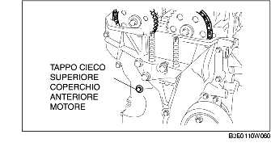
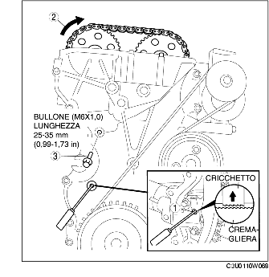

REGOLAZIONE GIOCO VALVOLE [LF]
B3E011012111W04
1. Rimuovere la piastra fori candele. (Vedere RIMOZIONE/INSTALLAZIONE PIASTRA FORI CANDELE [LF]).
2. Rimuovere il coperchio della batteria. (Vedere RIMOZIONE/INSTALLAZIONE BATTERIA [LF]).
3. Scollegare il cavo negativo della batteria.
4. Scollegare il cablaggio.
5. Rimuovere quanto segue.
-
(1) Ruota e pneumatico anteriori [Vedere PROCEDURE GENERALI (SOSPENSIONI)].
-
(2) Coperchio inferiore e paraspruzzi (destro)
-
(3) Bobine di accensione (Vedere RIMOZIONE/INSTALLAZIONE BOBINA D'ACCENSIONE [LF].)
-
(4) Tubo flessibile di ventilazione
-
(5) Coperchio testata
-
(6) Tappo cieco inferiore coperchio anteriore motore

-
(7) Tappo cieco superiore coperchio anteriore motore

-
(8) Tappo cieco inferiore blocco cilindri
6. Installare lo SST come mostrato in figura.
7. Ruotare l'albero motore in senso orario fino a portare il cilindro N°1 in posizione di PMS (finché il contrappeso non è attaccato allo SST).
8. Allentare la catena di distribuzione.
-
(1) Usando un opportuno cacciavite o uno strumento equivalente, sbloccare il cricchetto del tendicatena.

-
(2) Usando un'opportuna chiave posizionata sull'esagono di fusione, ruotare l'albero a camme di scarico in senso orario ed allentare la catena di distribuzione.
-
(3) Mettendo un bullone adatto [M6 × 1,0 lunghezza 25 mm-35 mm (0,99-1,37 in)] in corrispondenza del tappo cieco superiore del coperchio anteriore del motore, fissare la guida della catena in posizione di catena lasca.
9. Bloccare l'albero a camme di scarico mettendo una chiave sull'esagono di fusione come mostrato in figura.
10. Rimuovere l'ingranaggio dell'albero a camme di scarico.
11. Allentare i bulloni del cappello dell'albero a camme in 2-3 fasi nell'ordine mostrato in figura.
-
Nota
-
• La testata ed i cappelli dell'albero a camme sono numerati in modo che questi ultimi possano essere reinstallati nelle posizioni originali. Una volta rimossi, tenere i cappelli insieme alla testata da cui sono stati tolti. Non mescolare i cappelli.
12. Rimuovere l'albero a camme.
13. Rimuovere la punteria.
14. Selezionare lo spessore di regolazione appropriato.
-
Spessore di regolazione nuovo
-
= Spessore di regolazione rimosso + Gioco valvola misurato - Gioco valvola standard [ASPIRAZIONE: 0,25 mm (0,0098 in), SCARICO: 0,30 mm (0,0118 in)]
-
Standard [A motore freddo]
-
ASPIRAZIONE: 0,22-0,28 mm (0,0087-0,0110 in)
-
SCARICO: 0,27-0,33 mm (0,0107-0,0129 in)
15. Installare l'albero a camme con il cilindro N°1 allineato al PMS.
16. Serrare il bullone del cappello dell'albero a camme in due fasi come segue.
-
Coppia di serraggio
-
(1) 5,0-9,0 N·m
-
(51,0-91,7 kgf·cm; 44,3-79.6 in·lbf)
-
(2) 14,0-17,0 N·m
-
(1,5-1,7 kgf·m; 10,4-12,5 ft·lbf)
17. Installare l'ingranaggio dell'albero a camme di scarico.
-
Nota
-
• Non serrare il bullone dell'ingranaggio dell'albero a camme in questa fase. Prima di serrare il bullone verificare la fasatura della distribuzione.
18. Installare lo SST nella posizione indicata in figura.
19. Rimuovere il bullone [M6 x 1,0 lunghezza 25 mm-35 mm (0,99-1,37 in)] dal coperchio anteriore del motore in modo da mettere in tensione la catena di distribuzione.
20. Ruotare l'albero motore in senso orario fino a portare il cilindro N°1 in posizione di PMS (finché il contrappeso non è attaccato allo SST).
21. Bloccare l'albero a camme di scarico mettendo una chiave sull'esagono di fusione come mostrato in figura.
22. Serrare il bullone di fissaggio dell'ingranaggio dell'albero a camme di scarico.
-
Coppia di serraggio
-
69-75 N·m
-
(7,1-7,6 kgf·m; 50,9-55,3 ft·lbf)
23. Rimuovere lo SST dall'albero a camme.
24. Rimuovere lo SST dal tappo cieco inferiore del blocco cilindri.
25. Ruotare l'albero motore di due giri in senso orario fino a raggiungere il PMS.
-
• In caso di mancato allineamento, allentare il bullone di fissaggio della puleggia dell'albero motore e ripartire dal passo 14.
26. Applicare sigillante al silicone sul tappo cieco superiore del coperchio anteriore del motore.
27. Installare quanto segue:
-
(1) Tappo cieco superiore coperchio anteriore motore

-
Coppia di serraggio
-
8,0-11,5 N·m
-
(81,6-117,2 kgf·cm; 70,9-101.7 in·lbf)
-
(2) Tappo cieco inferiore blocco cilindri

-
Coppia di serraggio
-
18-22 N·m
-
(1,9-2,2 kgf·m; 14-16 ft·lbf)
-
(3) Tappo cieco inferiore coperchio anteriore motore nuovo.

-
Coppia di serraggio
-
10-14 N·m
-
(1,1-1,4 kgf·m; 7,4-10,3 ft·lbf)
-
(4) Coperchio testata (Vedere Dettaglio installazione coperchio testata).
-
(5) Tubo flessibile di ventilazione
-
(6) Bobine di accensione (Vedere RIMOZIONE/INSTALLAZIONE BOBINA D'ACCENSIONE [LF].)
-
(7) Coperchio inferiore e paraspruzzi (destro)
-
(8) Ruota e pneumatico anteriori [Vedere PROCEDURE GENERALI (SOSPENSIONI)].
28. Collegare il cablaggio.
29. Collegare il cavo negativo della batteria.
30. Installare il coperchio della batteria. (Vedere RIMOZIONE/INSTALLAZIONE BATTERIA [LF]).
31. Installare la piastra fori candele. (Vedere RIMOZIONE/INSTALLAZIONE PIASTRA FORI CANDELE [LF]).